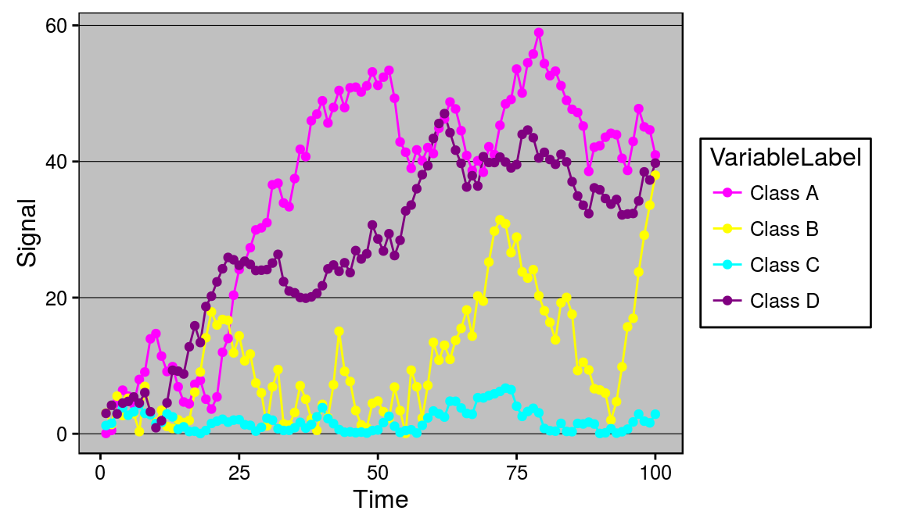
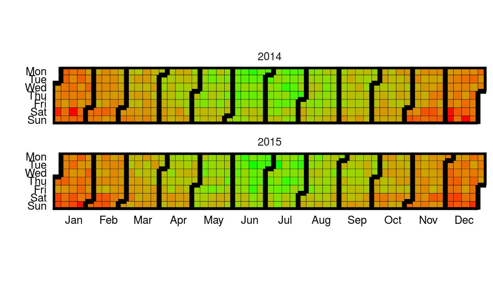
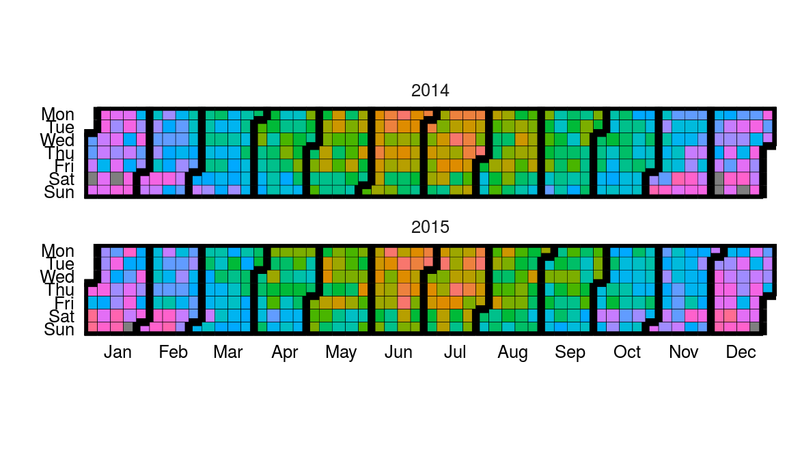
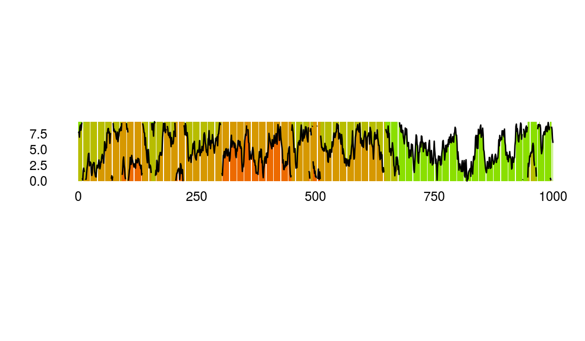
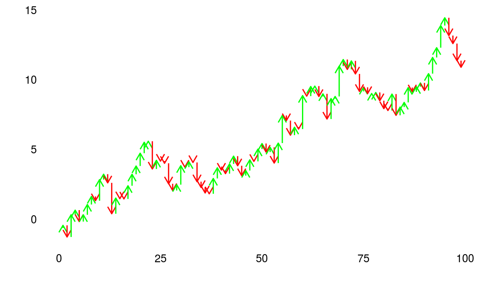
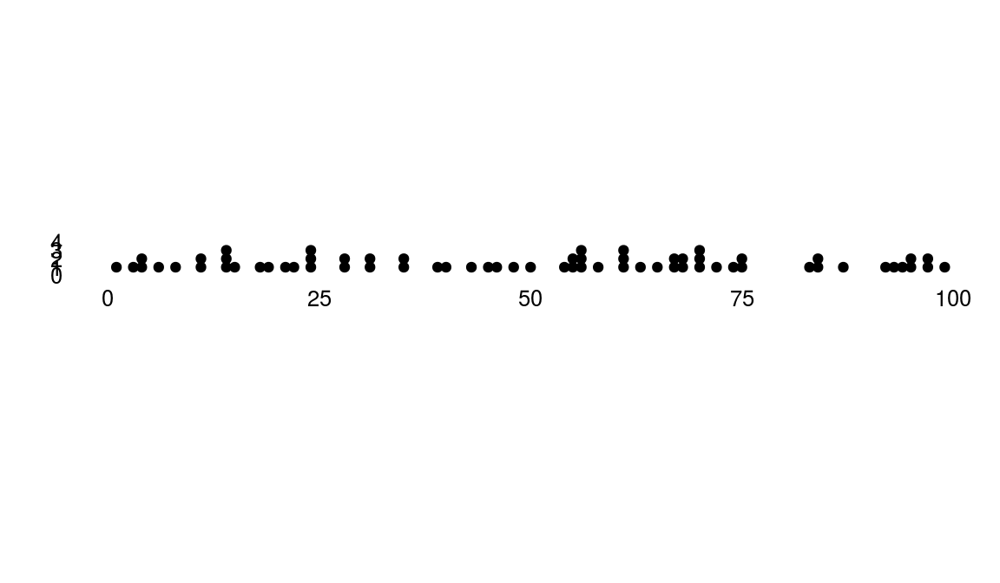

ggiraph
Make ggplot interactive
ggstance
Horizontal versions of ggplot2 geoms
ggalt
Extra coordinate systems, geoms & stats
ggforce
Accelarating ggplot2
ggrepel
Repel overlapping text labels
ggraph
Plot graph-like data structures
ggpmisc
Miscellaneous extensions to ggplot2
geomnet
Network visualizations in ggplot2
ggExtra
Marginal density plots or histograms
gganimate
Create easy animations with ggplot2
plotROC
Interactive ROC plots
ggthemes
ggplot themes and scales
ggspectra
Extensions for radiation spectra
ggnetwork
Geoms to plot networks with ggplot2
ggtech
ggplot2 tech themes, scales, and geoms
ggradar
radar charts with ggplot2
ggTimeSeries
Time series visualisations
ggtree
A phylogenetic tree viewer
ggseas
Seasonal adjustment on the fly
ggTimeSeries
https://github.com/Ather-Energy/ggTimeSeries
This R package offers novel time series visualisations. It is based on ggplot2 and offers geoms and pre-packaged functions for easily creating any of the offered charts. Some examples are listed below.
# Example from https://github.com/Ather-Energy/ggTimeSeries
library(ggplot2)
library(ggthemes)
library(data.table)
library(ggTimeSeries)Line Charts Legacy
IoT devices generate a lot of sequential data over time, also called time series data. Legacy portrayals of such data would centre around line charts. Line charts have reportedly been around since the early 1700s (source: Wikipedia) and we have nothing against them. They facilitate trend detection and comparison, are simple to draw, and easy to understand; all in all a very well behaved visualisation. In modern times, their use is widespread from the heartbeat monitor at a hospital to the multiple-monitor display at a trader’s desk.
## [1] "Excel 97 look recreated in R with the ggthemes package"
Alternatives
However there are cases when the data scientist becomes more demanding and specific. Five alternatives available to such a data scientist are listed below. All of these options are available as geoms or packaged functions in the ggplot2 based ggTimeSeries package.
Before that, setting a minimal theme -
minimalTheme = theme_set(theme_bw(12))
minimalTheme = theme_update(
axis.ticks = element_blank(),
legend.position = 'none',
strip.background = element_blank(),
panel.border = element_blank(),
panel.background = element_blank(),
panel.grid = element_blank(),
panel.border = element_blank()
)Calendar Heatmap
Available as stat_calendar_heatmap and ggplot_calendar_heatmap.
A calendar heatmap is a great way to visualise daily data. Its structure makes it easy to detect weekly, monthly, or seasonal patterns.
# creating some data
set.seed(1)
dtData = data.table(
DateCol = seq(
as.Date("1/01/2014", "%d/%m/%Y"),
as.Date("31/12/2015", "%d/%m/%Y"),
"days"
),
ValueCol = runif(730)
)
dtData[, ValueCol := ValueCol + (strftime(DateCol,"%u") %in% c(6,7) * runif(1) * 0.75), .I]
dtData[, ValueCol := ValueCol + (abs(as.numeric(strftime(DateCol,"%m")) - 6.5)) * runif(1) * 0.75, .I]
# base plot
p1 = ggplot_calendar_heatmap(
dtData,
'DateCol',
'ValueCol'
)
# adding some formatting
p1 +
xlab('') +
ylab('') +
scale_fill_continuous(low = 'green', high = 'red') +
facet_wrap(~Year, ncol = 1)
# creating some categorical data
dtData[, CategCol := letters[1 + round(ValueCol * 7)]]
# base plot
p2 = ggplot_calendar_heatmap(
dtData,
'DateCol',
'CategCol'
)
# adding some formatting
p2 +
xlab('') +
ylab('') +
facet_wrap(~Year, ncol = 1)
Horizon Plots
Available as stat_horizon and ggplot_horizon.
Imagine an area chart which has been chopped into multiple chunks of equal height. If you overlay these chunks one on top of the the other, and colour them to indicate which chunk it is, you get a horizon plot. Horizon plots are useful when visualising y values spanning a vast range but with a skewed distribution, and / or trying to highlight outliers without losing context of variation in the rest of the data.
# creating some data
set.seed(1)
dfData = data.frame(x = 1:1000, y = cumsum(rnorm(1000)))
# base plot
p1 = ggplot_horizon(dfData, 'x', 'y')
print("If you're seeing any vertical white stripes, it's a display thing.")## [1] "If you're seeing any vertical white stripes, it's a display thing."# adding some formatting
p1 +
xlab('') +
ylab('') +
scale_fill_continuous(low = 'green', high = 'red') +
coord_fixed( 0.5 * diff(range(dfData$x)) / diff(range(dfData$y)))
Steamgraphs
Available as stat_steamgraph.
A steamgraph is a more aesthetically appealing version of a stacked area chart. It tries to highlight the changes in the data by placing the groups with the most variance on the edges, and the groups with the least variance towards the centre. This feature in conjunction with the centred alignment of each of the contributing areas makes it easier for the viewer to compare the contribution of any of the components across time.
# creating some data
set.seed(10)
dfData = data.frame(
Time = 1:1000,
Signal = abs(
c(
cumsum(rnorm(1000, 0, 3)),
cumsum(rnorm(1000, 0, 4)),
cumsum(rnorm(1000, 0, 1)),
cumsum(rnorm(1000, 0, 2))
)
),
VariableLabel = c(rep('Class A', 1000), rep('Class B', 1000), rep('Class C', 1000), rep('Class D', 1000))
)
# base plot
p1 = ggplot(dfData, aes(x = Time, y = Signal, group = VariableLabel, fill = VariableLabel)) +
stat_steamgraph()
# adding some formatting
p1 +
xlab('') +
ylab('') +
coord_fixed( 0.2 * diff(range(dfData$Time)) / diff(range(dfData$Signal)))
Waterfall
Available as stat_waterfall and ggplot_waterfall.
Rather than the values itself, a waterfall plot tries to bring out the changes in the values.
# creating some data
set.seed(1)
dfData = data.frame(x = 1:100, y = cumsum(rnorm(100)))
# base plot
p1 = ggplot_waterfall(
dtData = dfData,
'x',
'y'
)
# adding some formatting
p1 +
xlab('') +
ylab('')
Occurrence Dot Plot
Available as stat_occurrence.
This one is a favourite in infographics. For rare events, the reader would find it convenient to have the count of events encoded in the chart itself instead of having to map the value back to the Y axis.
# creating some data
set.seed(1)
dfData = data.table(x = 1:100, y = floor(4 * abs(rnorm(100, 0 , 0.4))))
# base plot
p1 = ggplot(dfData, aes(x =x, y = y) )+
stat_occurrence()
# adding some formatting
p1 +
xlab('') +
ylab('') +
coord_fixed(ylim = c(0,1 + max(dfData$y)))